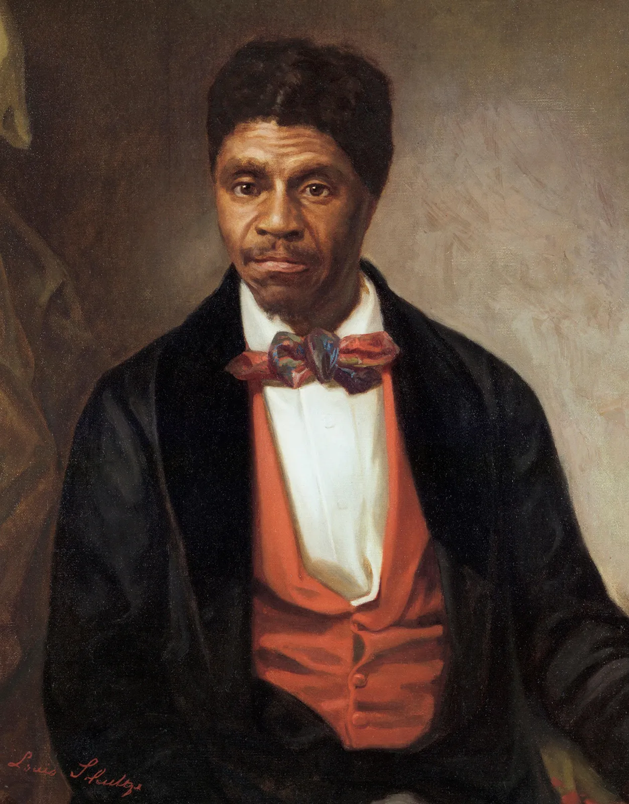
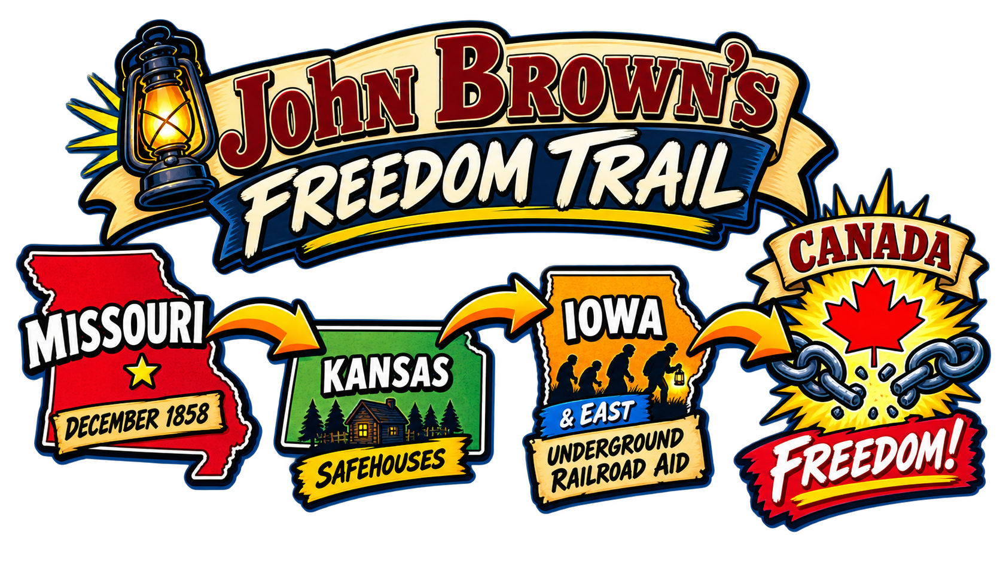

Dred Scott: A Door Slams Shut
Before Brown's Missouri liberation raid, the national fight over slavery had taken another major turn. Dred Scott was an enslaved man who had lived with his enslaver in Illinois and Wisconsin Territory, places where slavery was prohibited. Scott argued that living on free soil had made him free.
In 1857, the U.S. Supreme Court ruled against him. Chief Justice Roger B. Taney's majority opinion said that Black Americans could not be citizens of the United States under the Constitution and that Scott therefore could not sue for his freedom in federal court. The Court also ruled that Congress could not prohibit slavery in the federal territories, striking down the Missouri Compromise's restriction on slavery.
To abolitionists, the decision was another sign that the nation's political and legal systems were protecting slavery rather than containing it. Brown was already a militant abolitionist—he had used violence in Kansas before the ruling—so Dred Scott did not suddenly transform him. But the decision fit a pattern Brown believed he was seeing: speeches, elections, laws, and now the courts were failing to end slavery.
The Missouri Liberation Raid
Brown's most successful direct action against slavery began with an armed raid into Missouri and ended months later with the people he liberated reaching freedom in Canada. Unlike Harpers Ferry, this operation actually accomplished the immediate goal Brown set for it.
 Brown did not only argue against slavery. In Missouri he deliberately entered slave territory, liberated enslaved people, and helped move them beyond the reach of U.S. slavery.
Brown did not only argue against slavery. In Missouri he deliberately entered slave territory, liberated enslaved people, and helped move them beyond the reach of U.S. slavery.Across the Border
On the night of December 20, 1858, Brown led one of two small armed parties from Kansas across the border into Missouri. The groups entered several slaveholding farms and liberated 11 enslaved people, including members of the Daniels family. Brown also took horses, wagons, food, and other supplies that could help the group escape.
The raid was dangerous and controversial. During the operation, a slaveholder named David Cruise was killed by a member of the other party. Missouri authorities demanded Brown's arrest, offered rewards for his capture, and wanted the people he had liberated returned to slavery.
Even some antislavery allies were uneasy. They opposed slavery but feared that Brown's armed raids would bring retaliation against free-state communities and the Underground Railroad networks that were helping freedom seekers more quietly.


Was This the Underground Railroad?
What was familiar
The Underground Railroad was the main network Brown used to help move the liberated group north and east. The group depended on secret shelter, trusted antislavery allies, wagons, food, and places where they could stop without being betrayed. People connected to the Underground Railroad helped hide, feed, transport, and protect them along the way.
That network was not a literal railroad and did not have one fixed route. It was a loose collection of people and safe places that changed depending on danger, weather, and who could be trusted.
What was different
Brown did not simply assist people who had already escaped on their own. He crossed into a slave state with armed men and deliberately removed enslaved people from slavery. That made the event an organized liberation raid as well as an escape.
The difference mattered. Brown was no longer only helping people evade slavery; he was directly attacking slaveholders' claimed property rights and openly challenging the power of a slave state.
A Success—With a Warning
Unlike Harpers Ferry, the Missouri operation accomplished its immediate goal. Brown kept the group moving through Kansas, Iowa, and farther east while avoiding the posses and officials looking for him. The people he had liberated eventually reached Canada, where U.S. slave laws could not force them back into slavery.
The episode also revealed how much Brown's thinking had changed. He increasingly believed that carefully planned armed action could do more than protest slavery—it could physically break people out of it. The Missouri raid was small, mobile, and successful. Within months, Brown would try to apply that same belief on a vastly larger scale at Harpers Ferry.

Why might an abolitionist oppose slavery but still disagree with Brown's methods?